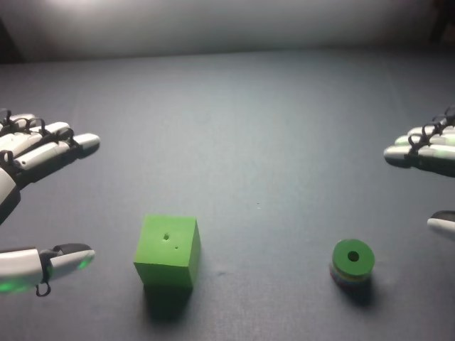

RoboCOIN · Airbot MMK2 · stack_block/episode_000000
Episode 000000

Visual review action_review.json
{
"prompt_protocol": "humanoid_action_v1",
"prompt_protocol_note": "Applied by analogy: this episode is a dual-arm Airbot MMK2 with five-finger dexterous hands, not a Humanoid Everyday or NVIDIA GR1 video. The humanoid_action_v1 rules (robot-relative side, per-hand roles, coordination, actual end state, shared constraint sentence, complete single-task clip) were used as written.",
"prompt_provenance": "visually_authored_from_video_and_initial_frame",
"dataset": "RoboCOIN/Airbot_MMK2_stack_block",
"task": "stack_block",
"episode_id": "episode_000000",
"generation_camera": "cam_head_rgb (robot first-person head camera)",
"source_video": "../../original/videos/chunk-000/observation.images.cam_head_rgb/episode_000000.mp4",
"generation_video": "../video.mp4",
"conditioning_first_frame": "../first_frame.png",
"action_prompt": "../actiongeneration_prompt.txt",
"source_frame_count": 176,
"fps": 30,
"resolution": {
"width": 640,
"height": 480
},
"selected_source_frame_start": 0,
"selected_source_frame_end_exclusive": 176,
"selection_reason": "Complete single-task clip retained: left hand moves the cube to the table center, then right hand stacks the cylinder on it. Both phases belong to one stacking task, so the full 176-frame sequence is kept without cropping or first_substep splitting.",
"usable_prompt": "The robot's left hand, on the left side of the view, grips the green cube between its thumb and fingers, lifts it, carries it toward the table center, sets it down and releases it. The robot's right hand then closes its fingers around the green cylinder, lifts it, carries it over the cube, lowers it onto the cube's top face and releases it, leaving the cylinder resting on top of the cube. Keep the camera fixed; preserve robot geometry, physically valid joint motion, and normal gripper opening and closing.",
"chronology": [
{
"frames": [
0,
12
],
"observation": "Initial frame: robot-left hand (image left) is open and raised at the left edge with its thumb extended below it; robot-right hand (image right) is open at the right edge, mostly out of view. Green cube lies left of centre, green cylinder (green top with blue/yellow/white stripes on its side, hole in top) lies right of centre. The left hand advances toward the cube and tilts down; the right hand stays at the right edge."
},
{
"frames": [
14,
24
],
"observation": "Left hand lowers with the thumb on the table side of the cube and the fingers/palm side above and behind it; the fingers and thumb close on the cube (contact visible from about frame 14, firmly pinched by frame 24-25). The cube is held between thumb and the fingers/palm, not merely pushed."
},
{
"frames": [
26,
46
],
"observation": "Left hand lifts the cube and carries it toward the right and forward, the cube tilting in the grip (frames 36-46) with its shadow separated from it, while the forearm extends into view. The right hand remains static at the right edge."
},
{
"frames": [
48,
58
],
"observation": "Left hand lowers the cube onto the table near the table centre and the thumb backs off; by frame 58-60 the cube sits flat on the table and the hand is no longer holding it."
},
{
"frames": [
60,
70
],
"observation": "Left hand withdraws toward the left edge and stops with fingers open (it stays idle there until the end except for a small drift at frames 168-174). Right hand begins moving inward toward the cylinder."
},
{
"frames": [
72,
96
],
"observation": "Right hand arrives over/beside the cylinder with its palm facing down and fingers extended, then lowers; by about frame 84-96 the fingers wrap the cylinder's sides and the thumb comes in underneath/beside it. The cylinder is partly hidden by the hand."
},
{
"frames": [
98,
118
],
"observation": "Right hand is nearly stationary with fingers curled around the cylinder, finishing the grasp (slow finger closure). The cylinder is still on the table, occluded."
},
{
"frames": [
120,
134
],
"observation": "Right hand lifts the cylinder off the table (visible raised and tilted in the fingers at about frames 126-134) and carries it left toward the cube, remaining in contact with the cylinder with fingers and thumb."
},
{
"frames": [
136,
154
],
"observation": "Right hand brings the cylinder over the cube and lowers it onto the cube's top face (cylinder over cube at frames 136-142, resting on the top face with fingers still around it by frames 146-154)."
},
{
"frames": [
156,
160
],
"observation": "Fingers open and release; the thumb/lower fingers slide away. Cylinder stands upright on top of the cube with the hole facing up."
},
{
"frames": [
162,
175
],
"observation": "Right hand lifts and withdraws toward the upper right, ending partly out of frame. Cylinder remains upright on the cube; left hand still at the left edge, open. Final state: cylinder stacked on the cube near the table centre."
}
],
"anatomical_side_evidence": [
"Head camera looks forward over the table; the hand entering from the image-left edge is the robot's left hand and the one entering from the image-right edge is the right hand. This agrees with the other evidence below.",
"Parquet telemetry: eef_sim_pose_state holds two end-effector poses (columns 0-5 and 6-11). The first has y = +0.21 at frame 0, moving to about +0.02 during frames 0-60 (the left-hand cube transport phase), then returns to +0.22 and stays still; the second has y = -0.18 and begins moving only after frame 60 (right-hand phase). With x forward, positive y is robot-left and negative y is robot-right.",
"Wrist cameras: cam_left_wrist_rgb sees the green cube near the hand at frame 20, and cam_right_wrist_rgb sees the striped cylinder in the hand at frame 100. The front camera faces the robot, so its image is mirrored: the active hand at frame 20 is on the image-right there, matching robot-left.",
"The Parquet column names were not available for the poses, so the pose-column to side mapping rests on the y-sign convention and its agreement with the head-camera and wrist-camera views."
],
"arm_roles": {
"left": "Acts first (frames about 14-60). Pinches the green cube between thumb and fingers/palm, lifts and carries it toward the table center, sets it down and releases it. Afterwards it is retracted at the left edge, open and idle; it does not touch the cylinder or the stack.",
"right": "Idle at the right edge until about frame 60. Then approaches the green cylinder, wraps fingers and thumb around it (grasp complete by about frame 98-118), lifts and carries it over the cube, lowers it onto the cube's top face, opens to release it (frames 156-160) and withdraws upward and rightward."
},
"coordination": "Strictly sequential, no hand-to-hand transfer and no overlapping manipulation. The left hand finishes positioning the cube and has withdrawn (frame 60-70) before the right hand starts moving toward the cylinder; the right hand then stacks the cylinder onto the cube the left hand placed. The left hand provides no support during stacking.",
"observed_outcome": {
"status": "success",
"description": "The green cube ends at the table centre, sitting flat on the table; the striped green cylinder rests upright on the top face of the cube, with both hands withdrawn (left at the left edge, right retreating out of view at upper right). Nothing dropped; no regrasp. The placement of the cylinder appears roughly centred on the cube top; the final frame shows it stable."
},
"source_annotation": {
"task_prompt": "place the square building blocks in the center with left hand and put the cylindrical building blocks on top with right hand.",
"scene_annotation": "On the left, there is a green building block. On the right, there is another green building block.",
"subtask_timeline": [
{
"frames": [
0,
25
],
"label": "Grasp the green build blocks with the left gripper"
},
{
"frames": [
26,
59
],
"label": "Place the green build blocks on the center of the table with the left gripper"
},
{
"frames": [
60,
118
],
"label": "Grasp the green cylindrical build blocks with the right gripper"
},
{
"frames": [
119,
155
],
"label": "Place the green cylindrical build blocks on the green build blocks with the right gripper"
},
{
"frames": [
156,
175
],
"label": "End"
}
]
},
"source_annotation_discrepancies": [
"Publisher text matches the visible task and sides (left hand: square block to the centre; right hand: cylinder on top).",
"Subtask timing differs: 'Grasp ... with the left gripper' covers frames 0-25, but the visible fingers close on the cube at roughly frames 14-25, with approach and hand pre-shaping from frame 0. 'Place ... on the center' (26-59) actually includes lifting and carrying the cube; release is at about frame 58-60.",
"'Grasp the green cylindrical build blocks with the right gripper' (60-118) mixes the right-hand approach (60-84) with a slow finger closure (84-118); the lift of the cylinder starts about frame 120-126, inside the publisher's 'Place' phase (119-155).",
"'End' (156-175) starts at the visible release (156-160); frames 162-175 are the right hand withdrawing.",
"Source subtask labels say 'gripper' while the hands are five-finger dexterous hands; the prompt uses hand wording.",
"The source scene text says 'another green building block' on the right; it is a striped green cylinder (its sides show blue, yellow and white bands), not a second cube. The publisher also calls the cube 'square building blocks' (plural); one cube and one cylinder are present."
],
"uncertainties": [
"Exact finger-level grasp of the cube by the left hand (which fingers press) is partially occluded; the cube is described as pinched between the thumb and the fingers/palm side.",
"Right-hand finger positions around the cylinder during frames 84-124 are occluded by the hand and the shadow; the lift moment is estimated at about frames 120-126 from the cylinder moving out of position.",
"Exact frame at which the cylinder stops touching the right-hand fingers on the cube is around 156-160 because of motion blur at 160-164.",
"Robot-relative left/right rests on head-view geometry, y-sign of the end-effector poses, and wrist-camera content, not on published pose column names."
],
"inspection_coverage": {
"frames_decoded": 176,
"frames_sampled_in_contact_sheets": 88,
"sample_stride": 2,
"sampled_frame_indices": "0, 2, ..., 174 (every second decoded frame)",
"native_resolution_frames_inspected": [
0,
24,
40,
58,
60,
74,
98,
124,
130,
136,
148,
156,
162,
175
],
"initial_png_inspected": true,
"initial_png_note": "generation input/first_frame.png inspected at native 640x480 after the full sequence; it matches decoded frame 0.",
"other_cameras_and_telemetry_used": [
"cam_left_wrist_rgb frames 20",
"cam_right_wrist_rgb frames 100",
"cam_front_rgb frames 20 and 100",
"original parquet eef_sim_pose_state, eef_velocity_state, observation.state"
],
"temporary_images_location": "/tmp/rv_review/robocoin_episode_000000/ (deleted after review)"
},
"evidence_frame_indices": [
0,
14,
24,
40,
58,
60,
74,
98,
124,
130,
136,
148,
156,
162,
175
],
"review_completed_at": "2026-10-15T19:52:05Z",
"dedicated_review_agent": "review_robocoin_episode_000000"
}